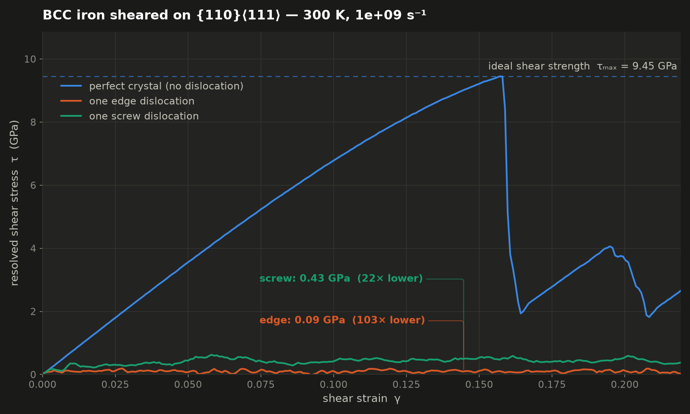
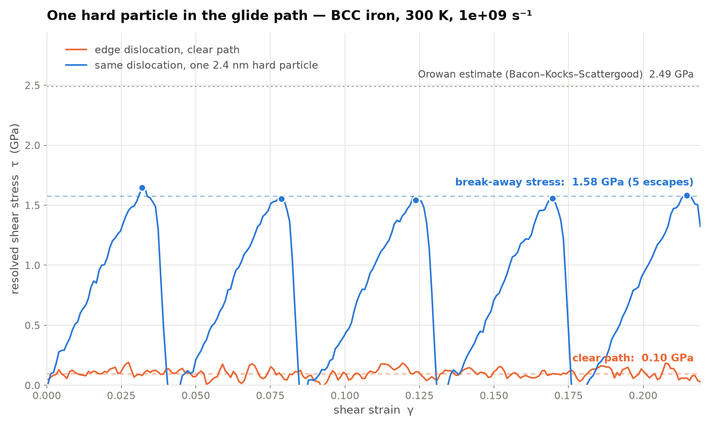

ME 382 / Molecular dynamics
Human (Tom): description of deliverable, choice of model system, and instructions
for validity / interpretation claims.
LLM: raw data and video generation, most
of the text at present.
LLM text: >90%
Two molecular-dynamics demonstrations in BCC iron. The first shows why a crystal containing a dislocation is so much weaker than its bonds suggest. The second shows how you take that strength back by putting an obstacle in the dislocation's way.
These are artificial, qualitative demonstrations. They are built to make a mechanism visible, not to predict a material.
The crystals are a few nanometres across; the shear is applied at about 109 s−1, some twelve orders of magnitude faster than a laboratory test; one dislocation in a cell this size is a density far beyond any real microstructure, and so is a particle spacing of 2.5 nm; and the “precipitate” is a sphere of atoms held rigid rather than a genuine second phase.
What happens on screen — the glide, the pinning, the bowing, the loop left behind — is real physics. The stresses are not material properties of iron and should not be quoted as such. Treat every number below as illustrative of a trend, not as a measurement.
Three identical blocks of BCC iron, sheared identically on the {110}⟨111⟩ slip system. They differ only in what they contain: nothing, one edge dislocation, or one screw dislocation. Because both [111] and [11̄2] are axes of the same cell, all three fit the same box at the same orientation with atom counts within 2 %, so the dislocation character is the only variable.
| Quantity | Value in this model |
|---|---|
| Shear modulus of the slip system | 68.7 GPa |
| Ideal shear strength (perfect lattice) | 9.45 GPa at γ = 0.157 |
| Flow stress, one screw dislocation | 0.43 GPa — 22× lower |
| Flow stress, one edge dislocation | 0.09 GPa — 103× lower |
The perfect lattice has to shear every bond on the slip plane at once, and holds out until it nucleates slip catastrophically. The two crystals that already contain a dislocation never approach that: the dislocation only has to break bonds along its core, a row at a time. That the screw is several times harder than the edge is specific to BCC, and is why the yield strength of these metals depends so strongly on temperature.

The same edge-dislocation cell, with one hard 2.4 nm particle sitting on the glide plane. The particle is a sphere of atoms that relaxes with the crystal and is then simply never allowed to move, so it models a hard, non-shearable second phase. The dislocation cannot cut it and must bow between it and its periodic images.
| Quantity | Value in this model |
|---|---|
| Flow stress, clear path | 0.10 GPa |
| Break-away stress against the particle | 1.58 GPa — 16× higher |
| Escape events over the run | 5, evenly spaced in strain |
| Orowan estimate (Bacon–Kocks–Scattergood) | 2.49 GPa — measured/predicted 0.63 |
Free glide becomes a stick–slip cycle: the line is held until the stress is enough to bow it through the channel, escapes leaving a loop behind, races round the cell, and is caught again. The five escapes come at equal strain intervals of 0.046, against b/h = 0.044 for one traverse of the cell — a useful internal check that each cycle really is one pass.

Everything runs on CPU with the LAMMPS Python wheel — no GPU, no external data.
shear_demo/run_all.sh produces the first demonstration and
precip_demo/run_all.sh the second, each in well under an hour on four cores.
Both folders carry a README with the construction of the dislocations, the validation
against an independently measured shear modulus, and the full list of caveats.
Source and notes on GitHub: shear_demo and precip_demo.